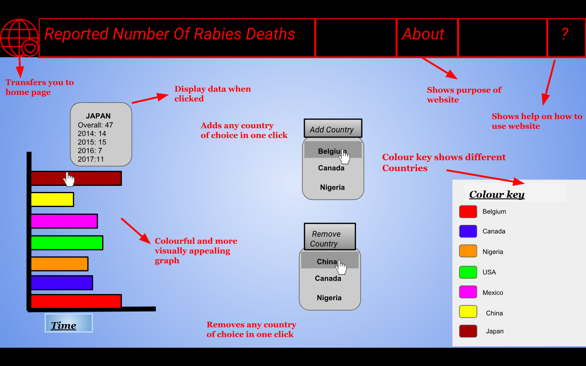

Developing Ideas
Introduction
In the modern day civilization, offering various types of data to a user remains crucial concerning any significant
company. However, presenting this data in a suitable and visually appealing way can be a challenge for any organization.
The overall purpose of this project is to display data from the World Health Organisation towards the user within a much
more convenient and accessible way. The target audience in this situation would be people interested in specific data of
health concerning a country or their society in a much faster way. Moreover, let us assume an audience member is drawn in
or concerned about, for example, the suicide rates of teenagers in the current society. To access this data, the audience
member would have to scroll through a dozen lines of data presented in an inconvenient and non visually appealing
arrangement. Therefore, if we display the dozens of data in a simple and accessible way such as a pie chart, the user would
not have to progress through the strain of obtaining these relevant data. We will construct these graphs using HTML5 canvas
which lets us view data using various types of graphs.
Design Specifications
So far, I have analyzed through 3 different websites that all used HTML5 and canvas however they all displayed data in
different ways. One presented in a pie chart form (https://canvasjs.com/javascript-charts/animated-chart/), one in a
line graph form (https://www.chartjs.org/samples/latest/charts/line/basic.html) and finally one in a bar graph form
( https://www.koolchart.com/demo/bar-chart). The purpose of this was to display data from the World Health Organisation
towards the user within a much more convenient and accessible way. The target audience in this situation would be people
interested in specific data of health concerning a country or their society in a much faster way. Overall, in my research
I have found that to display data using HTML5 canvas, the website needs the following elements in order to be successful:
- Include the format of the line chart HTML canvas since it is the most visually appealing and is great for comparisons
- I would make a large scale website and HTML5 canvas so the user gets a better view of the smaller lines of data
- Spread out each of the data lines as you add more data since the line charts becoming messy and overlapping too much is a common problem
- All the websites I analyzed had the feature that if the user hovers their mouse over the data chart, it displays data. However, this is only for a certain month not allowing the user to access that much data. However, for my data chart, I want that if you hover your mouse at any part of the line, it displays the data allowing the user to access more data.
- Furthermore, I would have a clear color key showing the user which type of data is being presented
- Moreover, I would like to present my data on how it has changed over a certain time period to show the user how their data has improved or decreased
- Finally, I would like the overall data chart to be user-friendly by not having any untrustworthy data and a visually appealing chart to display the data
Feasible Designs
Design 1
Design 2

My chosen designs
Overall, after presenting both my feasible designs to peers and teachers as well as my own opinion, I have found
that Design #2 was the most popular. The reason I thought design 2 was the best was for the following reasons.
Firstly, the bright solid colors used in the bar graph, as well as the whole canvas, is visually appealing, keeping
the user engaged. This contrasts to Design #1 Furthermore, the clear and big color key is an easy way to present which
country is being presented in the data as well as a bright and colorful addition to the canvas.Secondly, the pulldown
function, showing every country available to display data, is useful to the user as they can select a country of their
choice displaying data that will be added or removed from the graph. The menu bar displayed at the top fits in with the
logo as well as fits in with the topic which is the number of deaths a year and the color red has connotations with
death. Moreover, I decided to format the bar graph in a way that it shows the progression over time by labeling the
y-axis as time. This gives the user an idea of how the amount of death caused by rabies has changed over the years
and what we can do to prevent it from further impacting society. Finally, I included the feature in which you have to
click on the bar on the graph in order to display the data. This is a convenient and satisfying way to display data to
the user.